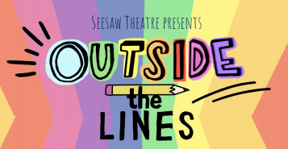
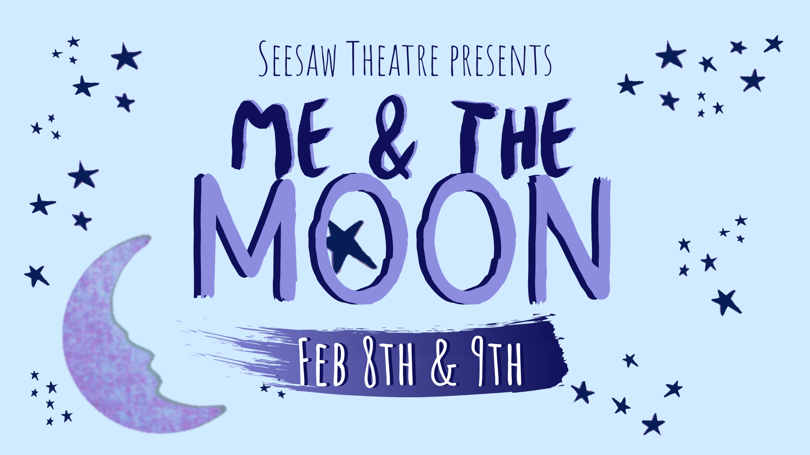
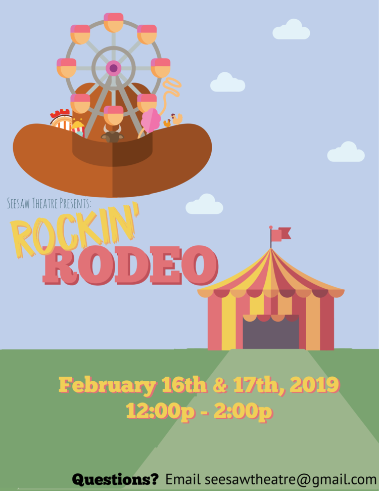
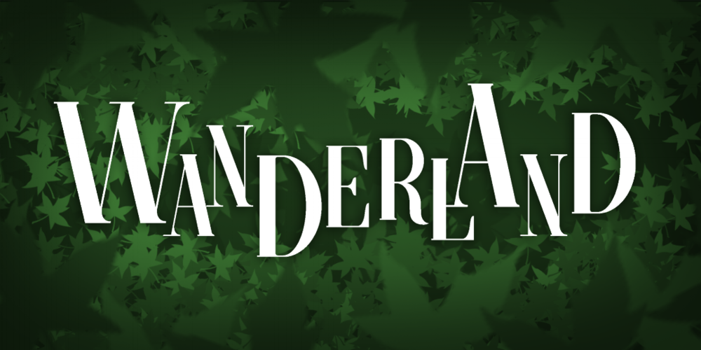
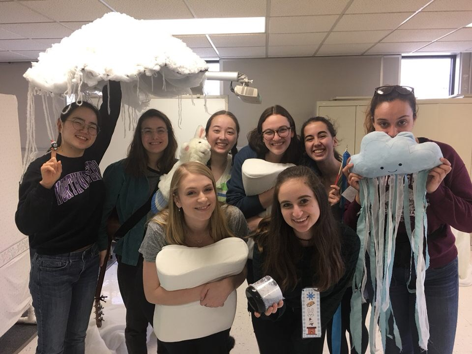
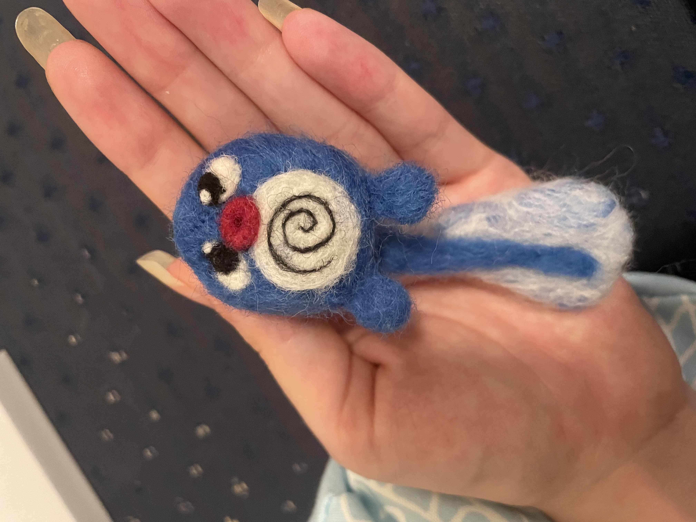
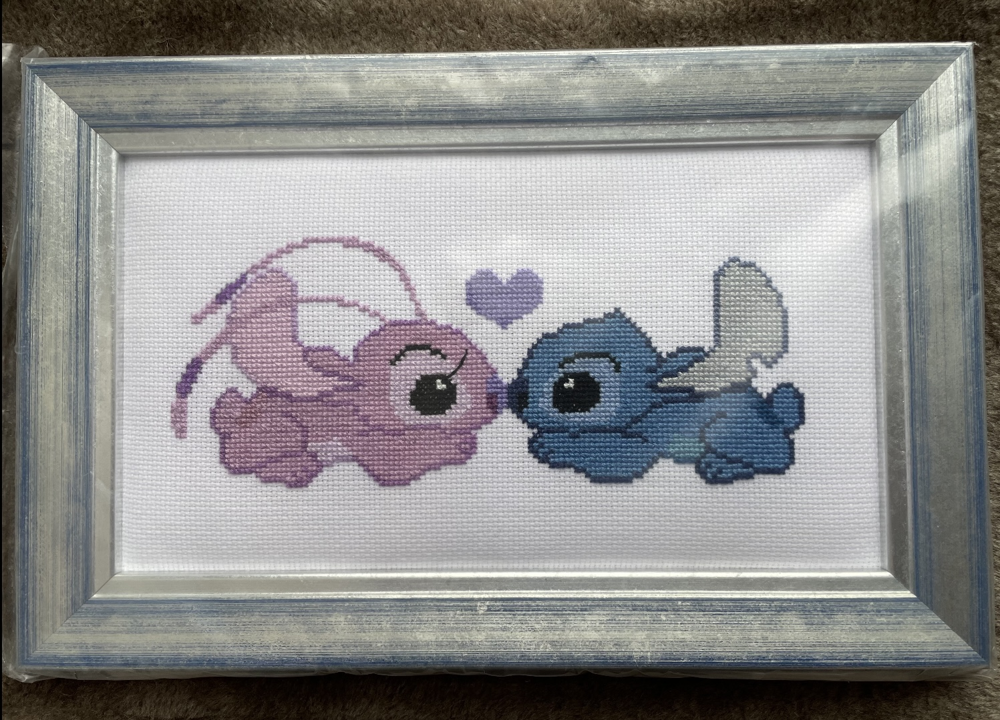
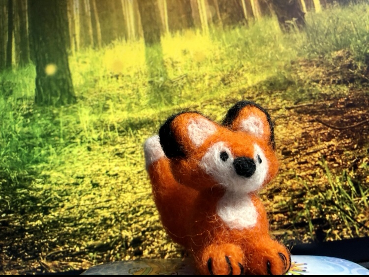
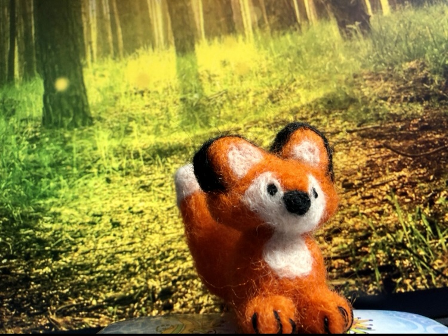

Projects
Computer Science
Using ChatGPT to Code a Personal Website
I was messing around with ChatGPT and decided to let it code a personal website. Honestly, it did better in five minutes than I did with months of effort.
ChatGPT's superior personal website
Skills and Tools: Basic HTML/CSS knowledge for touch-ups
Topic Finding for Cellular Senescence in PubMed Dataset
I am working on a side project using Natural Language Processing to identify potential areas of interest for new drugs targeting cellular senescence and quiescence by searching and synthesizing the medical literature.
Skills and Tools: Python, Text Categorization
Identifying Gender Bias in Movie Reviews
This was an independent research project. I worked on replicating this paper on the connotation frames of agency and power in movie scripts, using movie reviews instead. My results aligned with those found in the paper, indicating that men are more likely to be agentive and powerful, whereas women are likely to be non-agentive.
Skills and Tools: Python, spaCy, Pandas, Regular Expressions, Research
Emotion-Specific Text Generation Systems
I conducted this project for one of my classes with two partners. I fine-tuned GPT-2 using emotionally-tagged data from various dialogue sources, including the script of the TV show Friends. We built six models after the six primary emotions, Joy, Anger, Sadness, Disgust, Fear, and Surprise. I then wrote a program that used these six models in conjunction to produce a multi-part dialogue based on a given emotional arc.
Skills and Tools: Python, GPT-2, Language Modeling, Text Generation, Google CoLab
Visualizing Use of Fatal Force by Police
I conducted this project for one of my classes. A partner and I used the Washington Post's Fatal Force database to construct an interactive visualization in d3 detailing the race breakdown and locations of fatal police shootings since 2015. See the final visualization here .
Skills and Tools: D3, JavaScript, Excel, Tableau, Data Visualization, Interactive Visualization
Reddit Opioid Research
For this research, I relied on data from two sources. The first was an extensive survey taken by 200 users of opioids. The second was a record of these users' Reddit data in the weeks following the completion of the survey. Working with a partner, I built a Machine Learning pipeline to classify the likelihood of risky behaviors as reported in the survey using Part of Speech and TFIDF as dependent variables on users' Reddit activity.
Skills and Tools: Python, Machine Learning, TF-IDF
Chicago Police Home Invasions Project
I conducted this project for Jennie Rogers' Fall 2020 Data Science seminar in a group with Mandy Davis and Brendon Eby. We used data from the Chicago Police Department to analyze the department's record with home invasions. The full project is available publicly on GitHub here.
Skills and Tools: PostGresSQL, DataGrip, SQL, D3, Tableau, Python, Scikit-learn, Trifacta, Data Processing, Data Analysis, Machine Learning, Natural Language Processing, Data Visualization, Interactive Visualization
Mentoring
I enjoy acting as a mentor, lowering the ladder for those to follow. I have mentored multiple students in Computer Science. Through Rewriting the Code, where I am a fellow, I mentored Katie Taylor. Through Northwestern's Women in Computing program, I mentored Amy Wang. I meet with each of them for around an hour to ninety minutes biweekly. At BNY Mellon, I have participated in mentorship programs internally and via partnerships like NPower.
Skills and Tools: Mentorship, Communication
Florida SNAP Recipients
I analyzed data about Florida's food stamps program to identify areas of improvement. See my final analysis here: SNAP Analysis.
Skills and Tools: Data Analysis, Python, Microsoft Word
Siri Project Proposal
I created a proposal for a new Siri feature: a 20 questions game. See my final proposal here: Proposal.
Skills and Tools: Data Analysis, Competitive Research, Microsoft Word
Amazon Alexa Intern Onboarding
During my internship at Amazon, there was an opportunity for interns to participate in an intern hackathon. I formed a group with my close friend Jaedyn Lee and her friend Sean Ylescupidez from Northeastern. Our team, Northweastern, used online tutorials to teach ourselves how to build an Alexa skill. We created a skill using a conversational model that would ask users for their internship start date on first usage and then provide relevant information based on how close their internship was. It also provided a countdown of days until the internship began. See our presentation here:
Skills and Tools: Alexa development, PowerPoint, iMovie
Amazon Latency Tool
During my 12 week summer internship at Amazon, I owned the development of a tool enhancement with an existing Java codebase to provide more accurate and granular latency metrics for Fire TV devices from user research to design to implementation. I provided a React frontend visualization to minimize developer time seeking root cause for latency issues.
Skills and Tools: Java, React
Affective Agent
For my Affective Computing class, our class jointly worked to build an affective conversational agent. I worked on text processing to analyze the mood of the speaker. See the GitHub page for my portion of the project here.
Skills and Tools: Python, RASA, Sentiment Analysis, Natural Language Processing
Recipe Transformer
For my Natural Language Processing class, I worked with my group to create a recipe transformer, which was able to take in recipes (from AllRecipes.com) and modify them according to various specifications - for instance cuisine. See the GitHub page for this project here.
Skills and Tools: Python, Natural Language Processing
Golden Globes Tweet Parser
For my Natural Language Processing class, I worked with my group to create a program which was able to take in large volumes of Twitter data and from there identify key Golden Globes-related information, such as Presenters, Nominees, and Winners of various categories. Our solution was ranked third of 27 solutions. See the GitHub page for this project here.
Skills and Tools: Python, Natural Language Processing
Bose Topic Aggregation
During my summer internship at Bose, I created a topic aggregation algorithm using word vectors. The basic pipeline involved preprocessing the text data with steps like lemmatization, removing duplicates, and removing stopwords, then encoding the concepts using fasttext vectors (more lightweight to train on specific data than BERT), creating a synonym dictionary based on comparisons of vectors, and then choosing the most representative synonym for the aggregated topic. See a detailed explanation in this presentation.
Skills and Tools: Python, Algorithm Development, Word Embeddings, Natural Language Processing
Bose Wishlist
At Bose, I owned the creation of a wishlist feature for our product. This used a rule-based classifier to identify "wishlists" for different products based on product reviews, e.g. "bluetooth" or "more colors". The categorization service worked on unstructured review data using ElasticSearch. See a detailed explanation in this presentation.
Skills and Tools: Python, ElasticSearch, Natural Language Processing, Data Processing
Bose Kibana Trainings
While interning at Bose Corporation, I realized that many of the users of the internal natural language processing app owned by my team were unaware of the breadth of capabilities it offered and how to use our product. I created a presentation on how to use the tool, brought it to my team, and offered to give tutorials to stakeholders. In the process of giving tutorials to teams from Legal to Aviation, I sought direct insights from our customers about what data was most useful to them and which upcoming features they were most excited about. These presentations increased usage of my team’s tool and clarified direction for further development. I also created dashboards for various teams using our tool.
Skills and Tools: Communication, PowerPoint, Leadership, Kibana
Fam!
I led a team in developing an iPhone app to store and calculate users’ family relations. I worked as Project Lead and on frontend, using React Native. I led a team of five freshmen and sophomores through the design and creation of a family tree app, including conducting user research, iterating through designs, and building out an app prototype. Despite our inexperience and small team, our team won first place in the competition thanks largely to our focus on customer needs. See the GitHub page for this project here.
Skills and Tools: UI/UX Design, User Testing, ReactNative, Leadership, PowerPoint, Communication
FamJam
I was a research assistant on the FamJam! making project of TIILT lab. I facilitated projects among families using technological tools like 3D pens and paper circuits and took field notes. This included travelling to a Makers' Fair, where I demonstrated the technology to children.
Skills and Tools: 3D pens, paper circuits, Observational Skills, Mentorship
HeartBeat
For a hackathon, I designed and built a website with a team of two others that provides a Spotify playlist customized by users’ moods, which can be determined by facial recognition. Technologies used include HTML, CSS, JavaScript, Google Cloud Platform, Google Vision, Python, and Flask. We won Best Design. See the GitHub page for this project here.
Skills and Tools: HTML, CSS, JavaScript, Google Cloud Platform, Google Vision, Python, Flask
Lodo Internship
During my summer internship with Lodo Therapeutics, I independently designed and implemented packages and tools in R for data processing and data visualization, employing regular expressions and Shiny, identifying over 4,500 data inconsistencies and correcting nearly 3000. I worked with devOps team to expand version control (git), continuous integration (Drone), and cloud storage (AWS) processes. Additionally, I got the chance to work in the lab. I conducted supervised lab work: executed PCR, restriction digest, ligation, and transformation. See my breakdown of my work here: Blog 1 and here: Blog 2.
Skills and Tools: R, R Shiny, UI Design, PCR, Lab Work
Personal Website
You are currently on my personal website! I created this website from scratch using HTML and CSS in 2018 and have been updating it now and again over the years since! To take a look behind the scenes, visit the GitHub page here: Website GitHub.
Skills and Tools: HTML, CSS
ThoughtJar
For the BuildHer 2018 Hackathon, I designed and built an iPhone app in React Native with a team of three others that provides users with a daily positive thought and space to reflect. We won Best Beginner Hack. See the GitHub page for this project here.
Skills and Tools: React Native, Teamwork
Performing
A Very Merry Sanctuary
I directed Seesaw's Spring production A Very Merry Sanctuary. Due to the pandemic, the final production was delivered in the form of an interactive website and mail-delivered props to follow along.
Skills and Tools: Directing, Leadership, Creative Thought, Zoom, Devising, Writing, Accessibility, Design Justice
Lunar New Year Cabaret
I contributed a rendition of the song "A Change in Me" from Beauty and the Beast to Cape Cod Theatre Company/Harwich Junior Theatre's Lunar New Year Celebration Virtual Cabaret aiming to celebrate the new year and shed light on the asian community as racism and discrimination increased during the Covid-19 pandemic. The cabaret is viewable here.
Skills and Tools: Singing, Self-Tape
Outside the Lines
I acted as assistant director on Outside the Lines. While the performance was eventually cancelled due to Covid-19, I participated in the devising process which enabled us to finalize a script.
Skills and Tools: Creative Thought, Zoom, Devising, Editing
Me & the Moon
I assistant-directed Me & the Moon and stepped in for several performances as an Adventure Guide.
Skills and Tools: Creative Thought, Communication, Working with Children, ASL
Rockin' Rodeo
I was a cowgirl Adventure Guide in Seesaw's Winter production Rockin' Rodeo.
Skills and Tools: Creative Thought, Performing, Working with Children, ASL
Smoke & Mirrors
I joined Northwestern's magic club, where I acted as Historian and Vice President. I participated in the 2018 and 2019 Spring performances, doing a rope act the first year and a telepathy act the second. Thanks to the club, I can also perform several card tricks.
Skills and Tools: Performing, Illusions
Wanderland
I was The Fawn in Seesaw's production of Wanderland.
Skills and Tools: Creative Thought, Performing, Working with Children, ASL
Snow Day
I was an Adventure Guide/Cast Member in Seesaw's Winter Event Snow Day. I performed as a student on a snow day and puppeteered the Snow Bunny.
Skills and Tools: Creative Thought, Performing, Working with Children, ASL, Puppetry
Other
Happiness Club
I acted as Secretary and President of Northwestern's Happiness Club, maintaining and updating an email list of over 1000 people and organizing dozens of events.
Skills and Tools: Leadership, Project Management, Event Planning, Communication, Gmail/Listserv
Naughton But Movies
In my spare time, I like to edit Sean Naughton's film blog, Naughton But Movies
Skills and Tools: Copyediting
Needlefelted Poliwag
My first freehand needlefelt endeavor, based on the Pokemon Poliwag. It won First Prize in the Textiles category of the Global Operations and Technology Craft Show at work.
Skills and Tools: Needlefelting, Wool
Cross-Stitch
I cross-stitched this image of Stitch and Angel and had it custom framed.
Skills and Tools: Cross Stitch, Yarn
Needlefelted Fox
In the first few months of the new year, I tried out a new art form, and made this fox from a kit my brother gave me.

 

Skills and Tools: Needlefelting, Wool
Orca Rug
In the first few months of quarantine, when I went home to Massachusetts, I picked back up latch hooking (and cross stitching!) and this orca rug was the result.

Skills and Tools: Latch Hook, Yarn
Study Abroad
I spent Fall Quarter 2019 studying abroad in Paris, France. I participated in an intensive French program. I studied sociology at the Sorbonne and ballet and pointe at the Marais School of Dance. I also took the opportunity to travel around Europe.
Skills and Tools: French, Cultural Ambassador, Critical Thinking, Ballet, Pointe, Planning
Kayla's Directory
I spent several years editing blog posts for Kayla's Directory, a website created to assist special needs families in VT.
Skills and Tools: Copyediting
Writing
In high school, I wrote for the school newspaper. My article Hollywood still has a big diversity problem won the award Best of SNO (Student Newspapers Online). Other articles are available here. I have had two poems published and also won a Scholastic Art and Writing Award Silver Key.
Skills and Tools: Creative Writing, Journalistic Writing, Copyediting